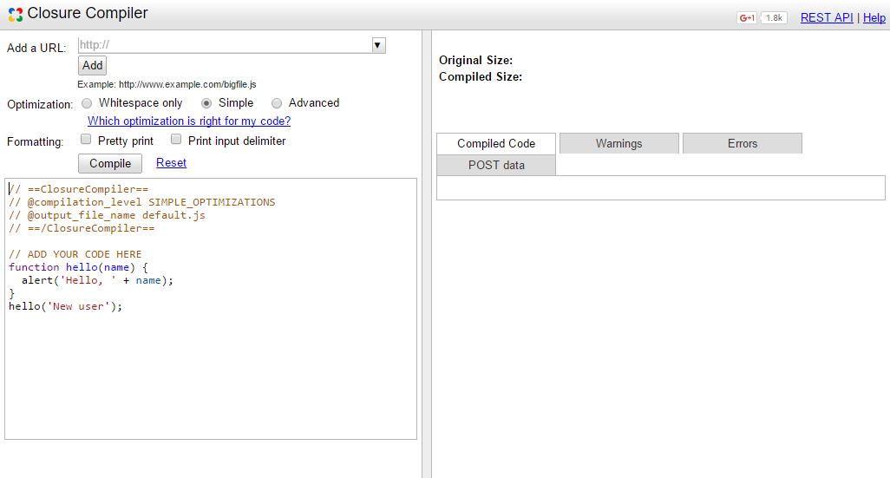
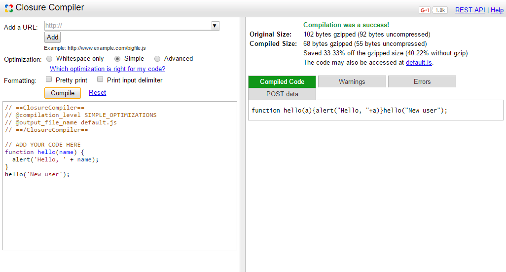

The Closure Compiler is a tool for making JavaScript download and run faster. Instead of compiling from a source language to machine code, it compiles from JavaScript to better JavaScript. It parses your JavaScript, analyzes it, removes dead code and rewrites and minimizes what's left. It also checks syntax, variable references, and types, and warns about common JavaScript pitfalls.
The Benefits
What are the benefits of using Closure Compiler?
Efficiency. The Closure Compiler reduces the size of your JavaScript files and makes them more efficient, helping your application to load faster and reducing your bandwidth needs.
Code checking. The Closure Compiler provides warnings for illegal JavaScript and warnings for potentially dangerous operations, helping you to produce JavaScript that is less buggy and easier to maintain.
How To Use Closure Compiler?
Currently, there are three ways to use this:
A simple web application.
An open source Java application that you can run from the command line.
A RESTful API.
But, for the sake of simplicity of this sub-section, we will skip the last one.
Run as web application
The easiest way to get familiar with the Closure Compiler service is by optimizing a few simple functions in the service's web UI.
Access the Closure Compiler UI by opening this page.
You should see the Closure Compiler UI pre-populated with a simple Hello World function.Tools - Closure Compiler UI
You can simply pasting in the link to your JavaScript file or the code itself.
Set what kind of optimization and formatting you would like to have.
Then, click Compile to see the result.The result
That's it. You now have a much smaller version of the JavaScript code that functions identically to the original. The Closure Compiler service reduced the code from 92 bytes to just 55 bytes by removing comments and whitespace and renaming basic symbols.
Run as Java application
The Closure Compiler application is a Java command-line utility that compresses, optimizes, and looks for mistakes in your JavaScript. To try out the Closure Compiler application with a simple JavaScript program, follow the steps below.
To work through this exercise you need the Java Runtime Environment version 7.
Download the Closure Compiler package
Create a working directory called closure-compiler. Download the Closure Compiler compiler.jar file and save it in closure-compiler.
Create a JavaScript file
Create a file named hello.js containing the following JavaScript:
// A simple function.
function hello(longName) {
alert('Hello, ' + longName);
}
hello('there!');
Save this file in the closure-compiler directory.
Compile the JavaScript file
Run the following command from the closure-compiler directory:
command creates a new file called hello-compiled.js, which contains the following JavaScript:
function hello(a){alert("Hello, "+a)}hello("New User");
Note that the compiler has stripped comments, whitespace and an unnecessary semi-colon. The compiler has also replaced the parameter name longName with the shorter name a. The result is a much smaller JavaScript file.
To confirm that the compiled JavaScript code still works correctly, include hello-compiled.js in an HTML file like this one:
Load the HTML file in a browser, and you should see the alert dialog.
To learn more about other flags and options for the Closure Compiler, execute the jar with the --help flag:
java -jar compiler.jar --help
Optimization Level
The Closure Compiler lets you choose from three levels of compilation, ranging from simple removal of whitespace and comments to aggressive code transformations.
WHITESPACE_ONLY
The WHITESPACE_ONLY compilation level removes comments from your code and also removes line breaks, unnecessary spaces, extraneous punctuation (such as parentheses and semicolons), and other whitespace. The output JavaScript is functionally identical to the source JavaScript.
This compilation level provides the least compression of the three levels.
SIMPLE_OPTIMIZATIONS
The SIMPLE_OPTIMIZATIONS compilation level performs the same whitespace and comment removal as WHITESPACE_ONLY, but it also performs optimizations within expressions and functions, including renaming local variables and function parameters to shorter names. Renaming variables to shorter names makes code significantly smaller. Because the SIMPLE_OPTIMIZATIONS level renames only symbols that are local to functions, it does not interfere with the interaction between the compiled JavaScript and other JavaScript.
SIMPLE_OPTIMIZATIONS is the default compilation level.
ADVANCED_OPTIMIZATIONS
The ADVANCED_OPTIMIZATIONS compilation level performs the same transformations as SIMPLE_OPTIMIZATIONS, but adds a variety of more aggressive global transformations to achieve the highest compression of all three levels. The ADVANCED_OPTIMIZATIONS level compresses JavaScript well beyond what is possible with other tools.
To enable this extreme compression, ADVANCED_OPTIMIZATIONS makes strong assumptions about the compiled code. If your code does not conform to those assumptions, ADVANCED_OPTIMIZATIONS will produce code that does not run.
For example, code compiled with ADVANCED_OPTIMIZATIONS may not work with uncompiled code unless you take special steps to ensure interoperability. If you do not flag external functions and properties referenced in your code, Closure Compiler will inappropriately rename references in your code, causing mismatches between the names in your code and in the external code.
The ADVANCED_OPTIMIZATIONS transformations include:
More aggressive renaming:
Compilation with SIMPLE_OPTIMIZATIONS only renames parameters and variables within functions. ADVANCED_OPTIMIZATIONS also renames global variables, function names, and properties.
Dead code removal:
Compilation with ADVANCED_OPTIMIZATIONS removes code that is provably unreachable. This is especially useful in combination with large libraries. If you use only a few functions from a large library file, the compiler can remove everything except those functions from its output.
Global inlining:
Compilation with ADVANCED_OPTIMIZATIONS replaces some function calls with the body of the function. This transformation is known as "inlining". The compiler only inlines functions when it determines that inlining is safe and saves space. Compilation with ADVANCED_OPTIMIZATIONS also inlines constants and some variables when the compiler determines that it can do so safely.
How to Set Optimization?
To set the compilation level in the Closure Compiler application, include the command line flag --compilation_level with a value of WHITESPACE_ONLY, SIMPLE, or ADVANCED, as in the following command: